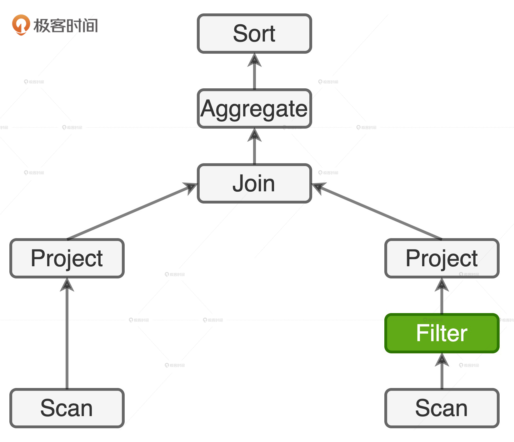
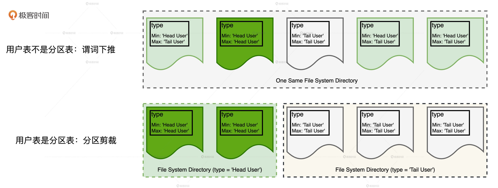
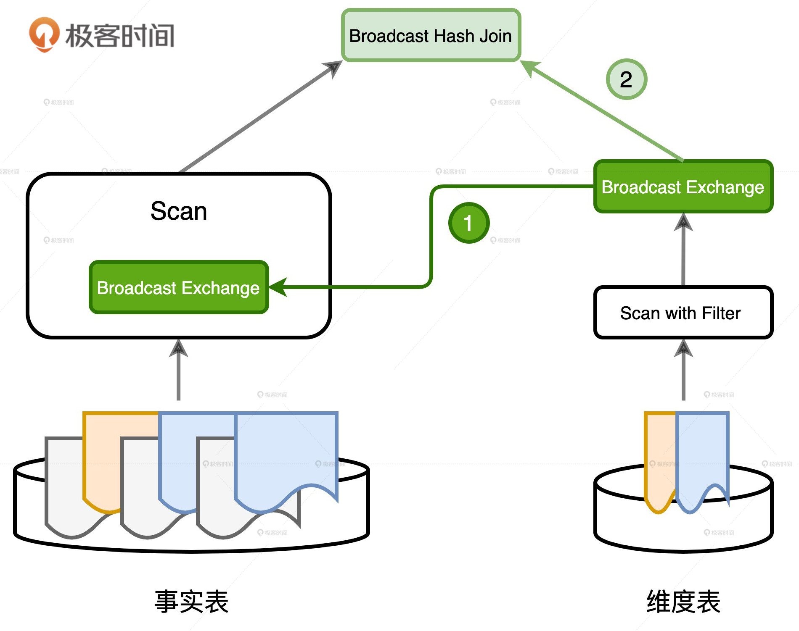
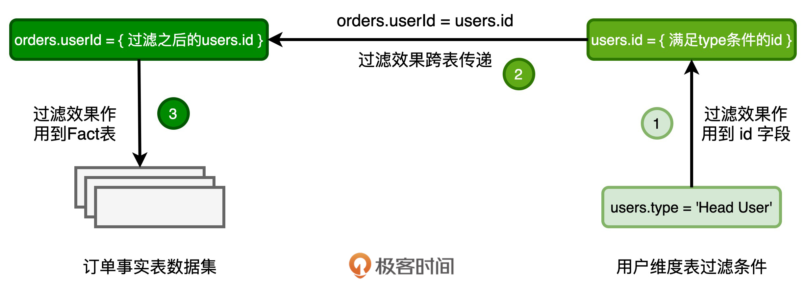

- 00 开篇词 Spark性能调优，你该掌握这些“套路”.md.html
- 01 性能调优的必要性：Spark本身就很快，为啥还需要我调优？.md.html
- 02 性能调优的本质：调优的手段五花八门，该从哪里入手？.md.html
- 03 RDD：为什么你必须要理解弹性分布式数据集？.md.html
- 04 DAG与流水线：到底啥叫“内存计算”？.md.html
- 05 调度系统：“数据不动代码动”到底是什么意思？.md.html
- 06 存储系统：空间换时间，还是时间换空间？.md.html
- 07 内存管理基础：Spark如何高效利用有限的内存空间？.md.html
- 08 应用开发三原则：如何拓展自己的开发边界？.md.html
- 09 调优一筹莫展，配置项速查手册让你事半功倍！（上）.md.html
- 10 调优一筹莫展，配置项速查手册让你事半功倍！（下）.md.html
- 11 为什么说Shuffle是一时无两的性能杀手？.md.html
- 12 广播变量（一）：克制Shuffle，如何一招制胜！.md.html
- 13 广播变量（二）：如何让Spark SQL选择Broadcast Joins？.md.html
- 14 CPU视角：如何高效地利用CPU？.md.html
- 15 内存视角（一）：如何最大化内存的使用效率？.md.html
- 16 内存视角（二）：如何有效避免Cache滥用？.md.html
- 17 内存视角（三）：OOM都是谁的锅？怎么破？.md.html
- 18 磁盘视角：如果内存无限大，磁盘还有用武之地吗？.md.html
- 19 网络视角：如何有效降低网络开销？.md.html
- 20 RDD和DataFrame：既生瑜，何生亮？.md.html
- 21 Catalyst逻辑计划：你的SQL语句是怎么被优化的？（上）.md.html
- 22 Catalyst物理计划：你的SQL语句是怎么被优化的（下）？.md.html
- 23 钨丝计划：Tungsten给开发者带来了哪些福报？.md.html
- 24 Spark 3.0（一）：AQE的3个特性怎么才能用好？.md.html
- 25 Spark 3.0（二）：DPP特性该怎么用？.md.html
- 26 Join Hints指南：不同场景下，如何选择Join策略？.md.html
- 27 大表Join小表：广播变量容不下小表怎么办？.md.html
- 28 大表Join大表（一）：什么是“分而治之”的调优思路？.md.html
- 29 大表Join大表（二）：什么是负隅顽抗的调优思路？.md.html
- 30 应用开发：北京市小客车（汽油车）摇号趋势分析.md.html
- 31 性能调优：手把手带你提升应用的执行性能.md.html
- Spark UI（上）深入解读Spark作业的“体检报告”.md.html
- Spark UI（下）：深入解读Spark作业的“体检报告”.md.html
- 期末考试 “Spark性能调优”100分试卷等你来挑战！.md.html
- 结束语 在时间面前，做一个笃定学习的人.md.html
- 捐赠
25 Spark 3.0（二）：DPP特性该怎么用？
你好，我是吴磊。
DPP（Dynamic Partition Pruning，动态分区剪裁）是Spark 3.0版本中第二个引人注目的特性，它指的是在星型数仓的数据关联场景中，可以充分利用过滤之后的维度表，大幅削减事实表的数据扫描量，从整体上提升关联计算的执行性能。
今天这一讲，我们就通过一个电商场景下的例子，来说说什么是分区剪裁，什么是动态分区剪裁，它的作用、用法和注意事项，让你一次就学会怎么用好DPP。
分区剪裁
我们先来看这个例子。在星型（Start Schema）数仓中，我们有两张表，一张是订单表orders，另一张是用户表users。显然，订单表是事实表（Fact），而用户表是维度表（Dimension）。业务需求是统计所有头部用户贡献的营业额，并按照营业额倒序排序。那这个需求该怎么实现呢？
首先，我们来了解一下两张表的关键字段，看看查询语句应该怎么写。
// 订单表orders关键字段
userId, Int
itemId, Int
price, Float
quantity, Int
// 用户表users关键字段
id, Int
name, String
type, String //枚举值，分为头部用户和长尾用户
给定上述数据表，我们只需把两张表做内关联，然后分组、聚合、排序，就可以实现业务逻辑，具体的查询语句如下。
select (orders.price * order.quantity) as income, users.name
from orders inner join users on orders.userId = users.id
where users.type = ‘Head User’
group by users.name
order by income desc
看到这样的查询语句，再结合Spark SQL那几讲学到的知识，我们很快就能画出它的逻辑执行计划。

由于查询语句中事实表上没有过滤条件，因此，在执行计划的左侧，Spark SQL选择全表扫描的方式来投影出userId、price和quantity这些字段。相反，维度表上有过滤条件users.type = ‘Head User’，因此，Spark SQL可以应用谓词下推规则，把过滤操作下推到数据源之上，来减少必需的磁盘I/O开销。
虽然谓词下推已经很给力了，但如果用户表支持分区剪裁（Partition Pruning），I/O效率的提升就会更加显著。那什么是分区剪裁呢？实际上，分区剪裁是谓词下推的一种特例，它指的是在分区表中下推谓词，并以文件系统目录为单位对数据集进行过滤。分区表就是通过指定分区键，然后使用partitioned by语句创建的数据表，或者是使用partitionBy语句存储的列存文件（如Parquet、ORC等）。
相比普通数据表，分区表特别的地方就在于它的存储方式。对于分区键中的每一个数据值，分区表都会在文件系统中创建单独的子目录来存储相应的数据分片。拿用户表来举例，假设用户表是分区表，且以type字段作为分区键，那么用户表会有两个子目录，前缀分别是“Head User”和“Tail User”。数据记录被存储于哪个子目录完全取决于记录中type字段的值，比如：所有type字段值为“Head User”的数据记录都被存储到前缀为“Head User”的子目录。同理，所有type字段值为“Tail User”的数据记录，全部被存放到前缀为“Tail User”的子目录。
不难发现，如果过滤谓词中包含分区键，那么Spark SQL对分区表做扫描的时候，是完全可以跳过（剪掉）不满足谓词条件的分区目录，这就是分区剪裁。例如，在我们的查询语句中，用户表的过滤谓词是“users.type = ‘Head User’”。假设用户表是分区表，那么对于用户表的数据扫描，Spark SQL可以完全跳过前缀为“Tail User”的子目录。

通过与谓词下推作对比，我们可以直观地感受分区剪裁的威力。如图所示，上下两行分别表示用户表在不做分区和做分区的情况下，Spark SQL对于用户表的数据扫描。在不做分区的情况下，用户表所有的数据分片全部存于同一个文件系统目录，尽管Parquet格式在注脚（Footer)中提供了type字段的统计值，Spark SQL可以利用谓词下推来减少需要扫描的数据分片，但由于很多分片注脚中的type字段同时包含‘Head User’和‘Tail User’（第一行3个浅绿色的数据分片），因此，用户表的数据扫描仍然会涉及4个数据分片。
相反，当用户表本身就是分区表时，由于type字段为‘Head User’的数据记录全部存储到前缀为‘Head User’的子目录，也就是图中第二行浅绿色的文件系统目录，这个目录中仅包含两个type字段全部为‘Head User’的数据分片。这样一来，Spark SQL可以完全跳过其他子目录的扫描，从而大幅提升I/O效率。
你可能会说：“既然分区剪裁这么厉害，那么我是不是也可以把它应用到事实表上去呢？毕竟事实表的体量更大，相比维度表，事实表上I/O效率的提升空间更大。”没错，如果事实表本身就是分区表，且过滤谓词中包含分区键，那么Spark SQL同样会利用分区剪裁特性来大幅减少数据扫描量。
不过，对于实际工作中的绝大多数关联查询来说，事实表都不满足分区剪裁所需的前提条件。比如说，要么事实表不是分区表，要么事实表上没有过滤谓词，或者就是过滤谓词不包含分区键。就拿电商场景的例子来说，查询中压根就没有与订单表相关的过滤谓词。因此，即便订单表本身就是分区表，Spark SQL也没办法利用分区剪裁特性。
对于这样的关联查询，我们是不是只能任由Spark SQL去全量扫描事实表呢？要是在以前，我们还没什么办法。不过，有了Spark 3.0推出的DPP特性之后，情况就大不一样了。
动态分区剪裁
我们刚才说了，DPP指的是在数据关联的场景中，Spark SQL利用维度表提供的过滤信息，减少事实表中数据的扫描量、降低I/O开销，从而提升执行性能。那么，DPP是怎么做到这一点的呢？它背后的逻辑是什么？为了方便你理解，我们还用刚刚的例子来解释。

首先，过滤条件users.type = ‘Head User’会帮助维度表过滤一部分数据。与此同时，维度表的ID字段也顺带着经过一轮筛选，如图中的步骤1所示。经过这一轮筛选之后，保留下来的ID值，仅仅是维度表ID全集的一个子集。
然后，在关联关系也就是orders.userId = users.id的作用下，过滤效果会通过users的ID字段传导到事实表的userId字段，也就是图中的步骤2。这样一来，满足关联关系的userId值，也是事实表userId全集中的一个子集。把满足条件的userId作为过滤条件，应用（Apply）到事实表的数据源，就可以做到减少数据扫描量，提升I/O效率，如图中的步骤3所示。
DPP正是基于上述逻辑，把维度表中的过滤条件，通过关联关系传导到事实表，从而完成事实表的优化。虽然DPP的运作逻辑非常清晰，但并不是所有的数据关联场景都可以享受到DPP的优化机制，想要利用DPP来加速事实表数据的读取和访问，数据关联场景还要满足三个额外的条件。
首先，DPP是一种分区剪裁机制，它是以分区为单位对事实表进行过滤。结合刚才的逻辑，维度表上的过滤条件会转化为事实表上Join Key的过滤条件。具体到我们的例子中，就是orders.userId这个字段。显然，DPP生效的前提是事实表按照orders.userId这一列预先做好了分区。因此，事实表必须是分区表，而且分区字段（可以是多个）必须包含Join Key。
其次，过滤效果的传导，依赖的是等值的关联关系，比如orders.userId = users.id。因此，DPP仅支持等值Joins，不支持大于、小于这种不等值关联关系。
此外，DPP机制得以实施还有一个隐含的条件：维度表过滤之后的数据集要小于广播阈值。
拿维度表users来说，满足过滤条件users.type = ‘Head User’的数据集，要能够放进广播变量，DPP优化机制才能生效。为什么会这样呢？这就要提到DPP机制的实现原理了。
结合刚才对于DPP实现逻辑的分析和推导，我们不难发现，实现DPP机制的关键在于，我们要让处理事实表的计算分支，能够拿到满足过滤条件的Join Key列表，然后用这个列表来对事实表做分区剪裁。那么问题来了，用什么办法才能拿到这个列表呢？
Spark SQL选择了一种“一箭双雕”的做法：使用广播变量封装过滤之后的维度表数据。具体来说，在维度表做完过滤之后，Spark SQL在其上构建哈希表（Hash Table），这个哈希表的Key就是用于关联的Join Key。在我们的例子中，Key就是满足过滤users.type = ‘Head User’条件的users.id；Value是投影中需要引用的数据列，在之前订单表与用户表的查询中，这里的引用列就是users.name。

哈希表构建完毕之后，Spark SQL将其封装到广播变量中，这个广播变量的作用有二。第一个作用就是给事实表用来做分区剪裁，如图中的步骤1所示，哈希表中的Key Set刚好可以用来给事实表过滤符合条件的数据分区。
第二个作用就是参与后续的Broadcast Join数据关联，如图中的步骤2所示。这里的哈希表，本质上就是Hash Join中的Build Table，其中的Key、Value，记录着数据关联中所需的所有字段，如users.id、users.name，刚好拿来和事实表做Broadcast Hash Join。
因此你看，鉴于Spark SQL选择了广播变量的实现方式，要想有效利用DPP优化机制，我们就必须要确保，过滤后的维度表刚好能放到广播变量中去。也因此，我们必须要谨慎对待配置项spark.sql.autoBroadcastJoinThreshold。
小结
这一讲，我们围绕动态分区剪裁，学习了谓词下推和分区剪裁的联系和区别，以及动态分区剪裁的定义、特点和使用方法。
相比于谓词下推，分区剪裁往往能更好地提升磁盘访问的I/O效率。
这是因为，谓词下推操作往往是根据文件注脚中的统计信息完成对文件的过滤，过滤效果取决于文件中内容的“纯度”。分区剪裁则不同，它的分区表可以把包含不同内容的文件，隔离到不同的文件系统目录下。这样一来，包含分区键的过滤条件能够以文件系统目录为粒度对磁盘文件进行过滤，从而大幅提升磁盘访问的I/O效率。
而动态分区剪裁这个功能主要用在星型模型数仓的数据关联场景中，它指的是在运行的时候，Spark SQL利用维度表提供的过滤信息，来减少事实表中数据的扫描量、降低I/O开销，从而提升执行性能。
动态分区剪裁运作的背后逻辑，是把维度表中的过滤条件，通过关联关系传导到事实表，来完成事实表的优化。在数据关联的场景中，开发者要想利用好动态分区剪裁特性，需要注意3点：
- 事实表必须是分区表，并且分区字段必须包含Join Key
- 动态分区剪裁只支持等值Joins，不支持大于、小于这种不等值关联关系
- 维度表过滤之后的数据集，必须要小于广播阈值，因此，开发者要注意调整配置项spark.sql.autoBroadcastJoinThreshold
每日一练
- 如果让你重写DPP实现机制，你有可能把广播阈值的限制去掉吗？（提示：放弃使用Broadcast Hash Join的关联方式，但仍然用广播变量来做分区剪裁。）
- 要让事实表拿到满足条件的Join Key列表，除了使用广播变量之外，你觉得还有其他的方法和途径吗？
期待在留言区看到你的思考和答案，我们下一讲见！
© 2019 - 2023 Liangliang Lee. Powered by gin and hexo-theme-book.